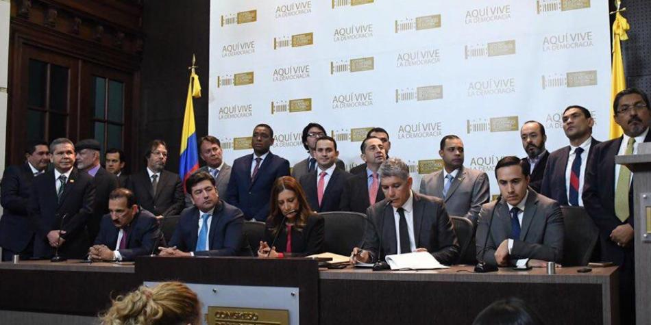
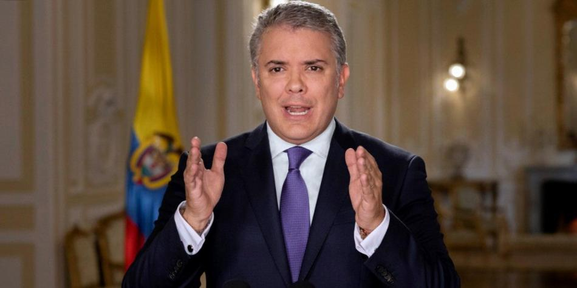
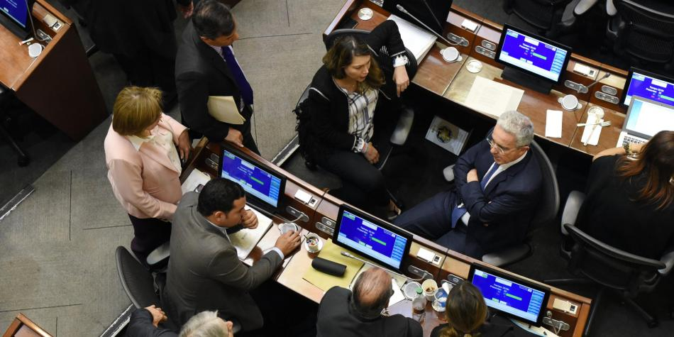
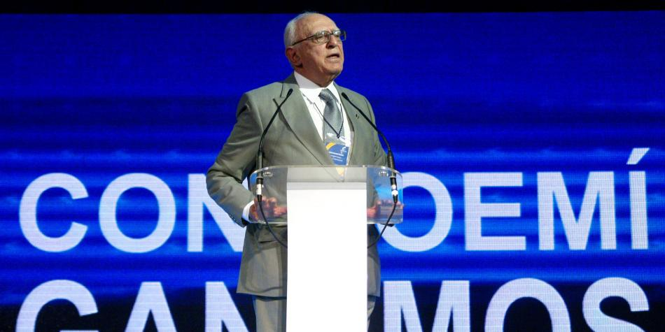
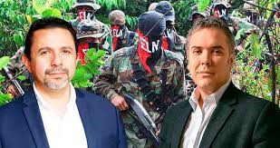

Congresistas dicen que no están chantajeando al Gobierno
El pronunciamiento del jefe de la cartera económica se dio luego de que en el Congreso, por falta de quorum, se tuviera que levantar la sesión en la que se discutía el Plan Nacional de Desarrollo. La cuestión es que el proyecto está en una carrera contra el reloj, pues debe ser votado antes del 23 de marzo, de no lograrlo, el Gobierno tendría que emitirlo por decreto.
S.O.S por el Plan de Desarrollo ante dificultad en el Congreso
Los cinco puntos clave en la discusión del Plan de Desarrollo
El acuerdo de la oposición para 'lavar la ropa sucia en casa'
Según señalaron sectores del Centro Democrático, partido de gobierno, quienes desbarataron el quorum fueron los partidos de oposición y los sectores independientes, entre los que están Cambio Radical y el partido de ‘la U’.
Decidimos abandonar el debate porque nos parecía una irresponsabilidad aprobar algo que tuvimos menos de un día para estudiar.
Hay que recordar que el Plan de Desarrollo, además de los 311 artículos que contiene el documento, pese tiene 2.638 proposiciones que son objeto de análisis.
“Decidimos abandonar el debate porque nos parecía una irresponsabilidad aprobar algo que tuvimos menos de un día para estudiar y en lo que se incluyen temas tan importantes como los subsidios a los servicios públicos y los recursos para la paz”, manifestó el senador de Cambio Radical Richard Aguilar.
Para Aguilar, lo sucedido “no fue ningún chantaje, porque nosotros no estamos buscando nada”, fue un acto de “responsabilidad” con la ciudadanía.
En el mismo sentido se pronunciaron los senadores de oposición Gustavo Bolívar, Iván Marulanda, Aida Avella y Katherine Miranda, quienes en un escrito señalaron que “no es responsable con el país votar una ponencia con 128 artículos nuevos y más de 900 páginas, sin tener tiempo para estudiarlas”.
La representante de Alianza Verde, Catalina Ortiz, se manifestó en el mismo sentido, pero pidió a sus compañeros asistir al debate para “negar” el proyecto y pidió a los sectores de gobierno no pupitrear el Plan de Desarrollo.

‘Cambio Radical no caerá en ejercicios numéricos sobre la JEP’: Lorduy
El partido Cambio Radical es hoy la ficha clave en el Congreso para inclinar la balanza sobre las objeciones presidenciales a la ley estatutaria de la JEP, la decisión que tome la colectividad será fundamental para saber si el Legislativo aprueba o rechaza estas objeciones.
Como lo reconoció el jefe del partido, Germán Vargas Lleras, la colectividad se encuentra dividida.
Estos votos son codiciados, pues suman 16 legisladores en el Senado. Las cuentas que hacen los defensores de la integridad de la JEP es tener de su lado a cuatro congresistas de este partido. Por lo menos tres de ellos se han mostrado favorables a rechazar las objeciones: Rodrigo Lara, Richard Aguilar y Temístocles Ortega.
Cambio Radical quiere hacer un ‘revolcón’ al ordenamiento territorial
Las cuentas en el Congreso para trámite de las objeciones de la JEP
¿Qué beneficios tendrían las empresas que contraten a adultos mayores?
Los oficialistas esperan, sin embargo, que Cambio Radical adopte una posición de bancada que les permita llevarse los 16 votos de su lado.
En Cámara, el representante José Daniel López ha sido quien liderado la línea de considerar inconvenientes las objeciones, especialmente porque considera que si el Congreso las tramita se estaría “extralimitando”.
En diálogo con EL TIEMPO, el representante César Lorduy, expresó que el partido tomará una decisión basado en sus “convicciones” y no “caerá en ejercicios numéricos sobre la JEP”.
¿Cómo está el panorama de Cambio Radical frente a las objeciones a la ley estatutaria de la JEP?
El panorama está tranquilo. Este viernes (en Valledupar) tendremos una reunión en la que nos daremos la oportunidad para conversar sobre este tema. Ya el panorama está un poco más despejado, la Corte Constitucional ratifica que el presidente sí tiene competencia para presentar sus objeciones y que el Congreso también tiene competencia para tramitar estas objeciones.
Se dice que Cambio Radical se ha demorado en tomar decisión porque quiere cotizar sus votos a ver qué puede conseguir…
Cambio Radical no caerá en los ejercicios numéricos sobre las objeciones a la JEP en el Congreso. Efectivamente nuestros votos, según lo que se ha dicho en los medios, se han ponderado, pero nuestro ejercicio será de convicción y con visión jurídica.
Lo único que quiere el partido es más apoyo en su agenda legislativa. Hemos sido muy juiciosos a la hora de presentar proyectos.
El comportamiento nuestro siempre ha sido tomar decisiones en bancada y esa será la base sobre la cual discutiremos este viernes
¿Esta decisión ha generado divisiones en el partido?
Más que división es la manifestación pública que han hecho algunos compañeros de Cambio Radical, que hemos conocido por medios de comunicación. Este es un partido de tendencias y por eso será importante la reunión del día viernes. Allí deberemos decidir si votamos en bancada o si se deja en libertad para votar.
¿Cree que los miembros del partido que consideran que se deben rechazar las objeciones van a ceder para votar en bancada?
El comportamiento nuestro siempre ha sido tomar decisiones en bancada y esa será la base sobre la cual discutiremos este viernes, pero no puedo descartar que quedar en libertad sea una de las opciones.

Juristas dicen a Corte que el Presidente tiene el derecho de objetar
Un grupo de reconocidos abogados, políticos y académicos, entre los que se encuentran el exministro Jaime Castro, le enviaron este miércoles una carta a la presidenta de la Corte Constitucional, Gloria Stella Ortiz, en la que defienden la facultad del presidente Iván Duque para presentar reparos a los proyectos de ley.
“Ninguna autoridad puede negarle al Presidente de la República el derecho, como lo llama nuestra norma de normas, de objetar proyectos de ley que sean enviados para su sanción"", reza la carta.
La comunicación se conoce en momentos en que el alto tribunal estudia la posible respuesta a una consulta del presidente de la Cámara, Alejandro Chacón, sobre el paso a seguir en el Congreso con las objeciones que Duque presentó sobre la ley estatutaria de la justicia para la paz.
En la misiva, firmada por 23 personas, explican que uno de los principios fundamentales del Estado de Derecho es que “las autoridades ejercerán sus funciones en la forma prevista en la Constitución, la ley y el reglamento”.
Agregan, además, que ninguna autoridad “puede desconocer la obligación que tiene el Congreso de decidir si acepta o rechaza las objeciones presentadas a los proyectos (…) si se trata de reparos jurídicos o de conveniencia”.
Carta a la Corte
Dicen también que de presentarse esta situación “estaríamos en presencia de un verdadero choque de trenes”.
Finalmente los firmantes citan el auto A376-14 de la Corte Constitucional, según el cual “no está prevista, ni en la Constitución ni en las normas legales que rigen las actividades de la Corte (…), la función de verificar si las autoridades públicas han obedecido lo dispuesto en sus providencias y fallos".
"Tal función está confiada a otras autoridades, en el campo de sus respectivas competencias. Por lo que se ha concluido que no es a la Corte Constitucional a quien le corresponde determinar si las autoridades del Estado están dando adecuado cumplimiento a sus decisiones”, dice el auto que los firmantes de la carta le recuerdan al alto tribunal.

Propondrán doble instancia retroactiva y obligatoria en la C. Suprema
El expresidente Álvaro Uribe, jefe máximo del Centro Democrático, anunció este martes que su partido avanzará en la propuesta de un proyecto de ley que contemple la doble instancia retroactiva para quienes hayan sido condenados en la Corte Suprema de Justicia.
“Estamos atentos para avanzar en el proyecto de la doble instancia obligatoria retroactiva en la Corte Suprema de Justicia”, anunció Uribe.
Esta iniciativa, de ser tramitada y aprobada por el Congreso, beneficiaría a varios condenados por ese alto tribunal, entre quienes están el exministro Andrés Felipe Arias y otros políticos condenados por ‘parapolítica’ en la Corte Suprema, entre muchos otros procesados.
“Este proyecto no es para Andrés Felipe Arias, es para todo colombiano que hubiera sido condenado en única instancia por la Corte Suprema de Justicia. Que se le reconozca el derecho fundamental y universal de la segunda instancia”, afirmó Uribe.Al ser indagado por quienes serían cobijados con la norma, de la cual no hubo fecha exacta para su radicación, Uribe respondió que “son muchos, no podría ponerme a hacer el listado”.
Proyecto de ley para las Fuerzas Militares
Uribe anunció, igualmente, que el Centro Democrático presentará, la próxima semana, un proyecto para beneficiar a los miembros de la Fuerza Pública que hayan cometido delitos en medio del conflicto armado.
Según el expresidente, la idea es que los uniformados que hubieran “incurrido” en delitos “hasta el primero de diciembre de 2016” tengan derecho “al beneficio de libertad condicional después de cinco años de reclusión”.
Aclaró que se exceptuarían "delitos como traición a la patria, violencia sexual, abuso de menores, etcétera”.
Sobre las objeciones presidenciales a la justicia para la paz, Uribe pidió esperar a que se nombren las comisiones accidentales de Senado y Cámara que estudiarán esos reparos.
Afirmó que su bancada ha venido estudiando el tema "con toda la buena voluntad" y que "buscará que haya unos acuerdos" que permitan que una mayoría "para aprobar las objeciones del presidente Iván Duque" en el Congreso.
Otros proyectos
Este mismo martes, el uribismo radicó un grupo de tres proyectos de ley, en la Secretaría de Senado, y tienen que ver con varios temas de impacto social.
El primero es que cuando un congresista, diputado o concejal “presente una iniciativa de gasto público, pida atención a un proyecto específico de un municipio, de un departamento o de la Nación” se “tenga información pública a fin de evitar esa corrupción de la ‘mermelada’”.
El segundo tiene que ver con que las asociaciones de padres de familias sean “veedoras” del Programa de Alimentación Escolar (PAE) y que sus “conceptos tengan que ser escuchados” por la entidad contratante.
“Y el tercer proyecto es uno que propone que cuando haya un divorcio, la parte no culpable del divorcio y que carezca de medios pueda tener la mitad de la pensión si la otra parte la tiene. Creemos que se hace aquí justicia para las familias colombianas en las cuales se ven estos casos”, dijo.
Agregó que su partido, adicionalmente, “apoyará los diferentes proyectos del Gobierno” en el Capitolio, especialmente “el que tiene que ver con los abusos a los menores y el de no permitir la conexidad de delitos como el narcotráfico con el delito político”.

José Galat, el celestino del Frente Nacional
A José Galat se le recordará como el celestino del Frente Nacional. La actividad política de este conservador boyacense, quien falleció este lunes a los 91 años, comenzó en 1953 cuando el general Gustavo Rojas Pinilla llegó a la Presidencia de la República.
En ese momento el joven estudiante de derecho de la Universidad Nacional calificó en su tesis de grado, que dirigió el liberal Darío Echandía, al general Rojas Pinilla como “un tirano de usurpación”. Eso le costó el exilio y terminó viviendo en París (Francia) durante algunos años.
“En Europa conservé una gran amistad con Echandía. Y un buen día, en uno de sus viajes, me invitó a almorzar ostras y le dije: “¿Por qué no nos unimos godos y liberales y tumbamos al dictador? ¿Por qué no le dices a Alfonso López Pumarejo y yo voy a Benidorm y le digo al Monstruo (Laureano Gómez)?”, le dijo Galat a la Revista Bocas durante una entrevista en octubre del 2017.
Las frases más escandalosas del fallecido José Galat
José Galat muere a los 91 años: estas fueron sus polémicas
'El Papa le está pavimentando el camino a la bestia': José Galat
Desde ese momento fue un hombre cercano al poder, sin importar si la Presidencia era liberal o conservadora, pues fue consejero presidencial del liberal Carlos Lleras Restrepo y del conservador Misael Pastrana.
Galat nació en Sogamoso en 1928. Sus padres, quienes eran árabes, llegaron al país durante la Primera Guerra Mundial, después de que su padre, un fiel católico, desertó del ejército otomano, pues no pretendía cambiar sus creencias como lo exigía el ejército.
“Mi papá era cristiano católico, de rito maronita, que es aprobado por Roma. Un rito distinto, autorizado desde viejos tiempos, en el cual se canta mucho. A él eso le hervía la sangre y resolvió largarse a Sudán”, narró a Bocas.
Pero también alternó la actividad política con la academia. Estudió un doctorado en Derecho y Ciencias Políticas en la Universidad Nacional y adelantó estudios en Ciencia Política y Sociología en la Universidad de París y Filosofía en la Universidad de Bercelona. Además, durante más de 30 años dirigió la Universidad La Gran Colombia.
En 2010 volvió a la vida política como precandidato presidencial por el Partido Conservador. Aunque fue cuarto entre cinco precandidatos, con el lema ‘Estamos con Dios’, dio mucho de qué hablar y daba la impresión de querer llevar al país a los años más gloriosos del conservatismo.
Después de algunos años dedicado a la universidad y a dirigir el programa ‘Un Café con Galat’, en 2017 volvió a aparecer en la prensa por unas polémicas declaraciones en contra del papa Francisco, quien iba a visitar el país.
“El papa Francisco es el papa negro y abre las puertas al anticristo. El Papa fue elegido en cónclave, pero hay serias dudas sobre su elección. Oramos por el señor para pedir por el Papa verdadero y para que el falso se convierta”, aseguró en una emisión de su programa.
La declaración le causó problemas con la iglesia e incluso terminó despidiendo a uno de los sacerdotes que trabajaba en la universidad como asesor espiritual por diferir sus críticas al Papa.
“Tú no puedes utilizar un vehículo de la universidad para criticar al rector: eso es deslealtad. No pueden utilizar mi casa para criticarme a mí”, argumentó.
El Partido Conservador lamentó la muerte de Galat, y afirmó que fue uno de sus más grandes dirigentes: "Hoy lamentamos la partida de uno de los grandes líderes del conservatismo, el doctor y catedrático José Galat Noumer. Precandidato presidencial en las elecciones del 2010 y expresidente de la Universidad La Gran Colombia. Todas nuestra solidaridad y condolencias para su familia".

Protocolo con ELN es de naturaleza política
Debate sobre la aplicación de protocolo. Opinión soslaya tema esencial. Política de Estado o de gobierno. Presidente dirige todo proceso de paz como responsable de orden público. Según la Corte Constitucional, negociación y acuerdo son política gubernamental, excepto acuerdo final elevado a norma constitucional que es política de Estado. Acuerdos con guerrilla no tienen valor normativo. Protocolo no tiene rango de tratado internacional, es política de gobierno, que depende del presidente en ejercicio.
Después del execrable atentado con carro bomba a la Escuela de Cadetes de la Policía General Francisco de Paula Santander, el pasado 17 de enero, se ha abierto un debate puntual en torno a la aplicación o no del protocolo firmado por el gobierno anterior con el grupo guerrillero del ELN, consistente en conceder 15 días a los representantes negociadores en Cuba para retornar al país.
Lo primero, criticar la forma como la opinión pública soslaya el tema esencial, esto es, el reproche al acto terrorista perpetrado por un grupo armado ilegal contra una escuela de cadetes inermes; y, en su lugar, poner la atención en el comportamiento del Estado y las condiciones de la negociación con los insurgentes. Pareciera que se trata de una sociedad que se preocupa más por la forma como se persigue al infractor que por la barbarie de su actuación.
No obstante lo anterior, conviene establecer los términos de este debate accesorio consistente en no aplicar el protocolo, donde se ha dicho de todo: que se trata de un compromiso internacional, de Estado, de Gobierno, de una política gubernamental, de una condición para lograr la paz, de la credibilidad del Estado en la comunidad internacional, entre otras.
El asunto se contrae a establecer la naturaleza del protocolo y los efectos de su incumplimiento. La Ley 418 de 1997, autoriza al gobierno para adelantar diálogos, negociaciones y firmar acuerdos con representantes de grupos armados al margen de la ley, para lo cual le atribuye un cúmulo de amplias facultades, y señala que la dirección de todo proceso de paz corresponde al presidente como responsable del orden público.
La Corte Constitucional, en sentencia C-379 de 2016, consideró que la negociación con las Farc y los acuerdos alcanzados obedecían a una política pública adelantada por el pasado gobierno. Posteriormente, en sentencia C-630 de 2017, consideró que el acuerdo final con las Farc, elevado a rango constitucional mediante Acto Legislativo 2 de ese año, no tenía valor normativo per se, sino que configuraba una política de Estado.
Así las cosas, las negociaciones y los acuerdos con grupos guerrilleros se adelantan por el gobierno en virtud de las atribuciones de mantenimiento del orden público, y estos últimos no tienen valor normativo, tan solo constituyen políticas públicas. Podría agregar, que no serían oponibles judicialmente, pues los acuerdos no reúnen las condiciones de validez propias de los contratos y su naturaleza es básicamente política. Es cierto que las condiciones para la negociación, la protección de la vida de los representantes guerrilleros y la suspensión de las ordenes de captura son indispensables para adelantar los diálogos; pero también es cierto, que no son propiamente exigibles, sino que dependen de las concesiones gubernamentales, para mantener las condiciones de la negociación.
En fin, no es cierto que el protocolo suscrito entre el anterior gobierno y el ELN tenga rango de tratado internacional por el apoyo a la negociación de países amigos, tampoco es cierto que se trate de una política de Estado, excepción hecha del acuerdo final con las Farc elevado a norma constitucional. Se trata de una política gubernamental, que depende del Presidente en ejercicio, según las autorizaciones de la Ley 418 de 1997.